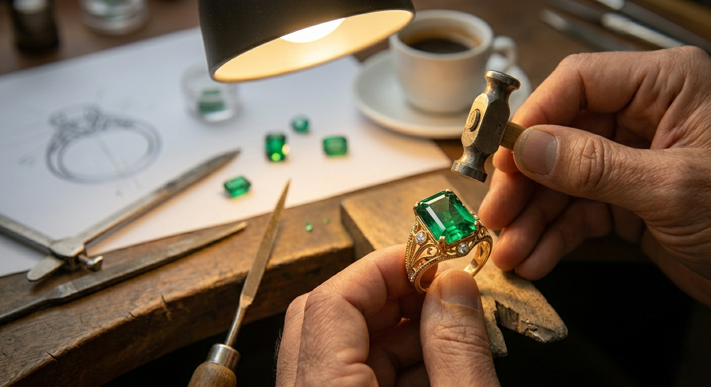
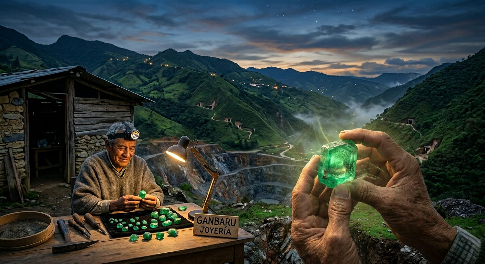
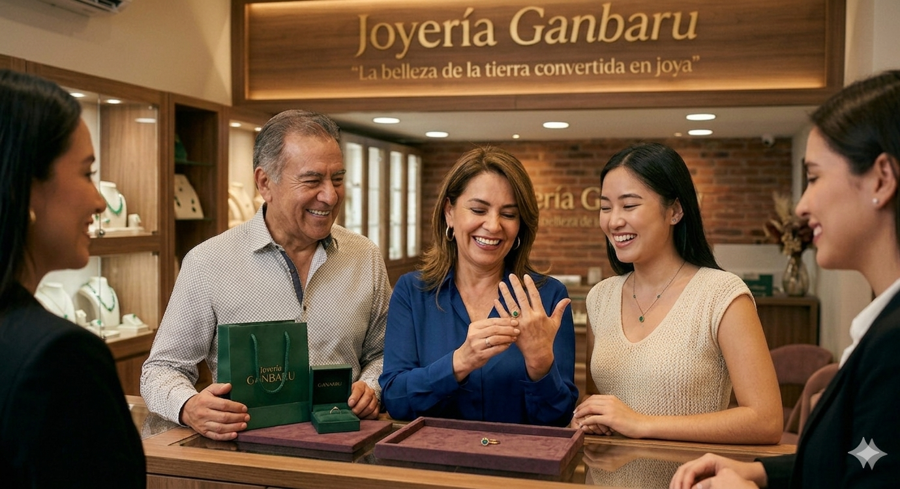
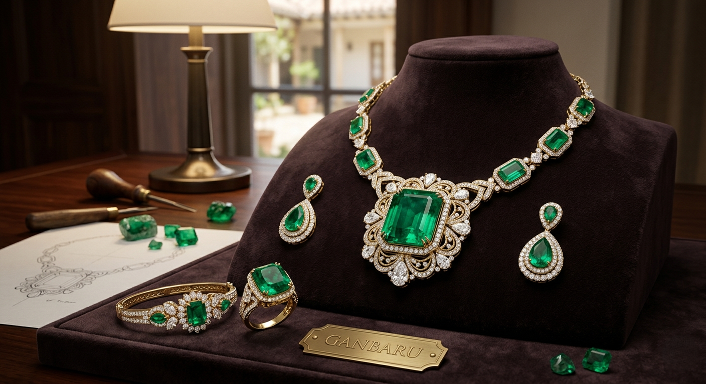

Joyería Artesanal Colombiana
Cada pieza cuenta una historia única
Productos Destacados
Recomendaciones para Ti
Catálogo de Joyas
Productos Relacionados
Carrito de Compras
Checkout
Nuestra Historia
"La belleza de la tierra convertida en joya"
🌿 Origen: El Alma de la Tierra
Ganbaru Joyería nace en lo más profundo de las montañas colombianas, en la región minera de Boyacá, donde la tierra guarda uno de sus tesoros más preciados: la esmeralda. Desde hace más de una década, hemos dedicado nuestra vida a honrar estas piedras que la naturaleza ha gestado durante millones de años.
Nuestra fundadora, Viviana Pineda, creció entre mineros artesanales y lapidarios que le enseñaron que cada gema cuenta una historia. No es solo una piedra preciosa; es un fragmento de la Tierra que ha viajado a través del tiempo para llegar a tus manos. En 2024, Viviana y su esposo Leonar Pulido y su hermano Pedro Pulido, deciden los tres, convertir esa pasión en un proyecto de vida: Ganbaru, palabra japonesa que significa "perseverar con esfuerzo y dedicación", que se traduce como "esforzarse al máximo, no rendirse y perseverar ante la dificultad". Ganbaru va más allá de "hacer bien una cosa": es un modo de entender la vida centrado en el esfuerzo, la resistencia y la resiliencia.

💎 Filosofía: Belleza con Significado
En Ganbaru creemos que la joyería trasciende lo estético. Cada pieza que creamos es un puente entre la naturaleza y el ser humano, un recordatorio de que la verdadera belleza tiene raíz y propósito. Nuestro trabajo no solo busca embellecer, sino también contar historias: historias de la tierra, de las manos que la transforman y de las personas que la portan.
Trabajamos exclusivamente con esmeraldas colombianas certificadas, reconocidas mundialmente por su color verde profundo y su pureza excepcional. Pero más allá de su valor comercial, valoramos el origen ético de cada gema, asegurándonos de que provenga de minas responsables que respetan tanto el medio ambiente como los derechos de las comunidades locales.

Misión
Crear joyas únicas con esmeraldas colombianas que cuenten historias, combinando la artesanía tradicional con diseños contemporáneos, ofreciendo a nuestros clientes piezas que trascienden el tiempo mientras apoyamos el comercio justo y la sostenibilidad ambiental.
Visión
Ser reconocidos como la joyería artesanal líder en Latinoamérica, posicionando la esmeralda colombiana en el mercado global como símbolo de lujo sostenible y autenticidad cultural.
Nuestros Servicios
Grabado Interno de Joyas
Personaliza tus joyas con grabados internos: fechas especiales, iniciales, nombres o mensajes significativos. Realizado con tecnología láser de precisión que no daña la estructura de la pieza.
Desde $50.000 COPMantenimiento para Joyas
Servicio profesional de limpieza, pulido, reparación de engarces, reajuste de anillos y restauración de piezas antiguas. Devolvemos el brillo original a tus joyas favoritas.
Desde $80.000 COPDiseño Personalizado
¿Tienes una idea única? Nuestros diseñadores la harán realidad. Creamos joyas a tu medida, desde bocetos hasta la pieza final, utilizando las mejores esmeraldas y metales preciosos.
Cotizar según diseñoRender 3D
Visualiza tu joya antes de crearla. Entregamos renders fotorrealistas en 360° para que apruebes cada detalle: tamaño, color, brillo y posición de las gemas antes de la fabricación.
Desde $120.000 COPNuestro Equipo
En Ganbaru Joyería, contamos con un equipo de profesionales apasionados por el mundo de las esmeraldas y la joyería fina. Cada miembro de nuestro equipo aporta su talento y dedicación para ofrecerte la mejor experiencia.
👩🎨 Viviana Pineda - Fundadora & Diseñadora Principal: Con una amplia experiencia, lidera la visión creativa de cada colección, inspirándose en la belleza natural de Colombia.
👨💼 Leonar Pulido - Co-fundador & Director Comercial: Responsable de llevar la magia de Ganbaru a cada rincón del país, construyendo relaciones duraderas con nuestros clientes.
👨🔧 Pedro Pulido - Co-fundador & Gestor de estrategia comercial: supervisa personalmente cada engarce y acabado, garantizando la más alta calidad.
👩💼 María González - Directora de Operaciones: Garantiza que cada pedido llegue a tiempo y en perfectas condiciones, cuidando cada detalle logístico.
Juntos y al lado de nuestros asesores de venta quienes guían la decisión de compra, formamos una familia dedicada a convertir la belleza de la tierra en joyas que cuentan historias.
Lo que dicen nuestros clientes
A continuación, presentamos algunos de los testimonios reales de nuestros clientes, quienes han confiado en Joyería Ganbaru para momentos inolvidables:
⭐ Marta Gómez: "Mi experiencia en Joyería Ganbaru fue excelente. Buscaba un anillo de compromiso especial y el equipo me asesoró con mucha profesionalidad y cercanía. La calidad del anillo y el diseño superaron mis expectativas. Lo recomiendo al cien por cien."
⭐ Alejandro Rodríguez: "Visité Joyería Ganbaru para comprar un regalo de aniversario para mi esposa. Me impresionó la variedad de joyas de alta calidad y la atención personalizada que recibí. Encontré el collar perfecto y a mi esposa le encantó. ¡Volveré sin duda!"
⭐ Sofía Martínez: "Me encanta Joyería Ganbaru por sus diseños únicos y la calidad de sus piezas. He comprado varios artículos y siempre he quedado muy satisfecha. El servicio postventa también es excelente. ¡Una joyería de confianza!"
⭐ Juan Carlos Pérez: "Buscaba un regalo especial y en Joyería Ganbaru encontré unas pulseras con esmeralda colombiana de excelente calidad. El personal me ayudó a elegir la pieza adecuada y me ofreció un trato inmejorable. Estoy muy contento con mi compra."
Estos testimonios reflejan el compromiso de Joyería Ganbaru con la satisfacción del cliente y la calidad de sus productos. ¡Visítalos y descubre por qué son una joyería de referencia!

🖐️ Artesanía con Propósito
En un mundo dominado por la producción masiva, en Ganbaru hemos elegido el camino contrario: la artesanía consciente. Nuestro taller está ubicado en Bogotá, donde un equipo de 15 artesanos altamente calificados da vida a cada diseño con técnicas que combinan tradición y modernidad.
Trabajo 100% manual
Cada engarce, cada pulido, cada detalle es realizado a mano por nuestros orfebres, quienes han heredado técnicas de generaciones anteriores.
Materiales sostenibles
Utilizamos oro y plata de reciclaje responsable, minimizando el impacto ambiental de nuestra producción.
Comercio justo
Trabajamos directamente con pequeños mineros artesanales, garantizando que reciban una compensación justa por su trabajo.
Certificación Verde
Utilizamos procesos de producción con mínimo impacto ambiental y materiales reciclados.
Cada joya que sale de nuestro taller lleva consigo no solo la belleza de la esmeralda, sino también el orgullo del trabajo bien hecho, la dedicación de quienes la crearon y el respeto por la tierra que la originó.
🌎 Un Legado para el Futuro
Ganbaru no es solo una joyería; es una filosofía de vida. Creemos que el lujo verdadero no está en el precio, sino en el significado. Por eso, cada pieza que entregamos va acompañada de un certificado de autenticidad y una tarjeta que cuenta el origen de la esmeralda y el nombre del artesano que la trabajó.
Nuestro sueño es que cada persona que lleve una joya Ganbaru sienta que porta un pedazo de Colombia, de su historia, de su gente y de su alma. Que al mirarla, recuerde que la belleza de la tierra puede convertirse en joya, y que esa joya, a su vez, puede transformar vidas.

📜 Nuestros Valores
Te invitamos a explorar nuestra colección y a descubrir la historia detrás de cada joya. Porque cuando eliges Ganbaru, no solo adquieres una pieza única, sino que te conviertes en parte de una cadena de amor por la tierra, por el arte y por las personas.
"La belleza de la tierra convertida en joya" no es solo nuestro slogan, es nuestra promesa.
Contáctanos
+57 310 7638495
joyeganbaru@gmail.com
Mi Cuenta
Entorno de demostración: los datos de esta cuenta son simulados y se guardan solo en tu navegador.
Mis Pedidos
Favoritos
Panel Administrativo
Productos Más Vistos
Más Agregados al Carrito
Búsquedas Populares
Pedidos Recientes
Términos y Condiciones
Última actualización: 27 de marzo de 2026
1. Aceptación de los Términos
Al acceder y utilizar el sitio web de Ganbaru Joyería, usted acepta cumplir con estos términos y condiciones. Si no está de acuerdo con alguna parte de estos términos, por favor no utilice nuestro sitio.
2. Productos y Precios
Todos los productos ofrecidos en Ganbaru Joyería son piezas únicas elaboradas artesanalmente con esmeraldas colombianas certificadas. Los precios están expresados en pesos colombianos (COP) e incluyen IVA. Nos reservamos el derecho de modificar precios sin previo aviso.
3. Envíos y Entregas
Realizamos envíos a todo el territorio colombiano. Los tiempos de entrega varían entre 3 y 10 días hábiles dependiendo de la ubicación. El costo de envío se calculará al momento de la compra.
4. Garantía
Todas nuestras joyas cuentan con garantía de 6 meses contra defectos de fabricación. La garantía no cubre daños por mal uso, golpes o pérdida de la pieza.
5. Cambios y Devoluciones
Aceptamos cambios dentro de los 15 días posteriores a la compra, siempre que el producto esté en perfectas condiciones y con su empaque original. Las devoluciones aplican únicamente por defectos de fabricación.
6. Propiedad Intelectual
Todo el contenido de este sitio web, incluyendo imágenes, textos, logotipos y diseños, es propiedad de Ganbaru Joyería y está protegido por las leyes de propiedad intelectual.
7. Contacto
Para cualquier consulta relacionada con estos términos, puede contactarnos a través de joyeganbaru@gmail.com o al teléfono +57 310 7638495.
Política de Privacidad
Última actualización: 27 de marzo de 2026
1. Información que Recopilamos
En Ganbaru Joyería recopilamos la siguiente información personal cuando realizas una compra o te registras en nuestro sitio:
- Nombre completo
- Dirección de correo electrónico
- Dirección de envío
- Número de teléfono
- Información de pago (procesada de forma segura a través de pasarelas de pago)
2. Uso de la Información
Utilizamos tu información para:
- Procesar y gestionar tus pedidos
- Enviar confirmaciones y actualizaciones de envío
- Responder a tus consultas y solicitudes
- Mejorar nuestros productos y servicios
- Enviar comunicaciones promocionales (solo con tu consentimiento)
3. Protección de Datos
Implementamos medidas de seguridad técnicas y organizativas para proteger tu información personal contra accesos no autorizados, pérdida o alteración. Tus datos de pago son procesados directamente por pasarelas de pago seguras.
4. Compartir Información
No vendemos, alquilamos ni compartimos tu información personal con terceros, excepto cuando sea necesario para:
- Cumplir con obligaciones legales
- Procesar pagos a través de pasarelas de pago autorizadas
- Realizar envíos a través de empresas de mensajería
5. Tus Derechos
Tienes derecho a acceder, rectificar o eliminar tus datos personales en cualquier momento. Para ejercer estos derechos, contáctanos a joyeganbaru@gmail.com.
6. Cookies
Nuestro sitio utiliza cookies para mejorar la experiencia de navegación y recordar tus preferencias. Puedes configurar tu navegador para rechazar las cookies si lo prefieres.
7. Cambios en la Política
Nos reservamos el derecho de actualizar esta política de privacidad. Te notificaremos sobre cambios significativos a través de nuestro sitio web.
8. Contacto
Si tienes preguntas sobre esta política de privacidad, contáctanos a joyeganbaru@gmail.com o al +57 310 7638495.